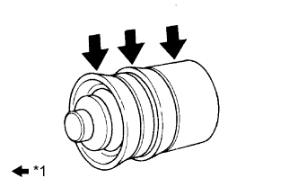

РАБОЧИЙ ЦИЛИНДР СЦЕПЛЕНИЯ (для моделей с 5L-E) > ПОВТОРНАЯ СБОРКА |
| 1. УСТАНОВИТЕ ПРОКАЧНОЙ ШТУЦЕР РАБОЧЕГО ЦИЛИНДРА СЦЕПЛЕНИЯ |
Установите прокачной штуцер на корпус цилиндра.
| 2. УСТАНОВИТЕ КОМПЛЕКТ РАБОЧЕГО ЦИЛИНДРА СЦЕПЛЕНИЯ |
Установите 2 новых колпачка поршня цилиндра на новый поршень.
Установите новую пружину на поршень.
|  |
Нанесите гликолевую консистентную смазку на основе литиевого мыла на поверхности, указанные стрелками на рисунке.
| *1 | Гликолевая консистентная смазка на основе литиевого мыла |
Установите поршень (с пружиной) в корпус цилиндра.
Установите шток на новый колпачок.
Установите колпачок (со штоком) на корпус цилиндра.